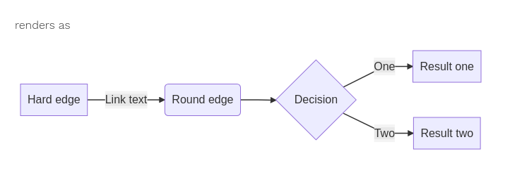

mermaidjs
shortcode mermaidjs theme drawing diagram netlify
Some links to mermaidjs
The topic is interesting because it will be useful to create the various diagrams. Initially, some links can be collected here, and mermaidjs explored.
Netlify Learn Theme • mermaidjs shortcode
Looking for information about being able to make a diagram in Hugo using shortcodes, found this Learn Theme which has a Github repository with shortcodes, including mermaid.
There would be a link to the javascript, and a shortcode to set up, but here is an example of the shortcode being used to make a diagram. This has now been enabled, using the mermaid shortcode in the next heading section. It should still work. It does. Now we have the live rendering and the picture.
graph LR;
A[Hard edge] -->|Link text| B(Round edge)
B --> C{Decision}
C -->|One| D[Result one]
C -->|Two| E[Result two]

Trying out a mermaid shortcode
- add layouts/shortcodes/mermaid.html
- add mermaid js package load (a specific version at the moment) to the bottom of /layouts/_default/single.html
- set mermaid: true in the front matter for this markdown
- here is some mermaid definition using the shortcode (it works!)
More links to follow up
Hugo is the name of the person running this website, but there are a few links to the static site generator.
Draft: falseLast update: 2020-11-28 14:36:23 +0000 GMT
Rating: 4
Next and previous could go here